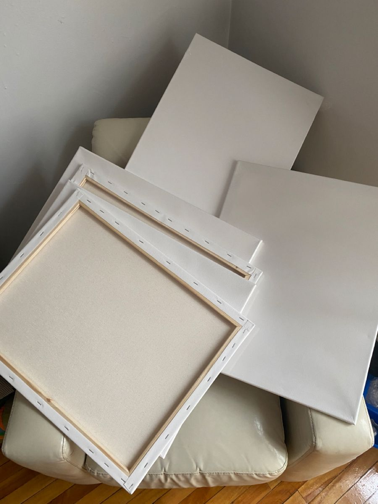
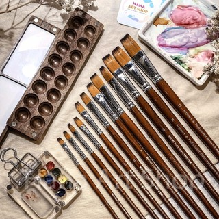
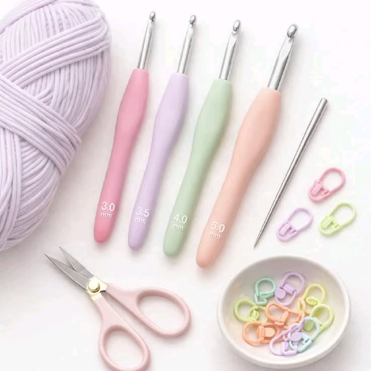
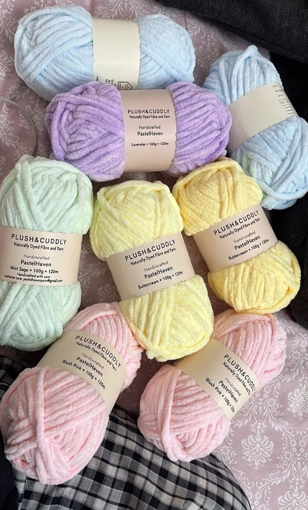
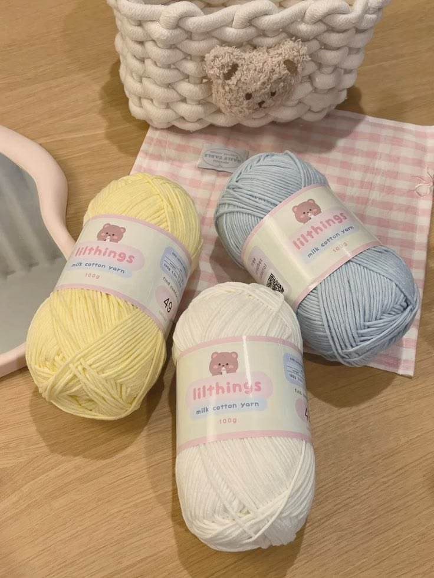

Handmade Crochet Blanket
Soft, textured and comforting, this handcrafted blanket brings a cozy charm to every room.
- Material: Cotton blend yarn
- Size: 120 x 150 cm
- Price: $69.00
Bestseller
Find something to inspire you
Browse our handmade crochet favourites and art essentials. Every product includes its details and price to help you find just what you need.
Soft, textured and comforting, this handcrafted blanket brings a cozy charm to every room.

A lovable character plush, carefully stitched with playful details and a gentle finish.

Bright, cheerful and full of personality, this amigurumi adds a happy pop of colour to your shelf.

A delicate, sweet companion with a soft finish and adorable details inspired by classic character design.

Small but charming, these mini crochet friends make perfect keepsakes, gifts, and everyday accessories.

A versatile, ready-to-paint canvas with a smooth surface for sketching, layering, and creating your next original piece.

Explore a bright range of colors for bold illustrations, expressive paintings, and fun creative projects.

Switch easily between fine details and broad strokes with a handy set of brushes for all kinds of techniques.

A handy collection of crochet hooks and finishing tools for your next yarn project.

Soft, colorful plush yarn that adds a cozy texture to blankets, toys, and other handmade pieces.

A versatile set of smooth cotton yarn in gentle colors for crochet, knitting, and creative crafts.